Candidate List 20261113Last night — ZTF: 857 passed basic cuts (12 young) · LSST: 2,874 passed basic cuts (240 young)Previous Day Next Day
Section 1: New Sources (age<1d) Section 2: Old (1-5d) sources observed last nightplaceholder
Section 1: New Afterglow/FBOT Cands Last Night (0)
Section 2: Older Sources Observed Last Night (21)
0. [ZTF] ZTF26acffhoq (Afterglow?) (TNS: AT 2026aine) [Back to Top] [Share] [Trigger Swift] [Fritz Alert] [Fritz Source] [Lasair]RA, Dec: 135.80342, 7.24845 9h 3m12.82s, 7d14m54.42sGalactic (l, b): 222.05572, 32.52423 ext(g-r) = 0.068


TESS: Sectors [ 8 34 44 45 46 61 72 88]
SDSS (<15 kpc):Found SDSS phot-z: z=0.09; peak abs mag = -18.75
PS1: 0 sources in 3 arcsec
LegacySurvey: 1 sources in 3 arcsec Closest: d = 0.80 arcsec, 254.8 deg (east of north) photoz=0.09 (68% bounds 0.06, 0.13), type=SER peak abs mag (ext. corrected) = -18.68 (68% bounds -17.8, -19.55)

Extinction-corrected gr color:
From alerts: 0.25 +/- 0.23 mag
Extinction-corrected gi color:
From alerts: 0.14 +/- 99 mag
Extinction-corrected ri color:
From alerts: -0.11 +/- 99 mag
Consistent with synchrotron, g-r>0!
Rise Rate:
r: 0.5 mag/day
Fade Rate:
1. [LSST] 171141200153673947 (FBOT?) [Back to Top] [Fritz Alert] [Fritz Source] [Lasair]RA, Dec: 350.53617, -9.75449 23h22m8.68s, -9d-45m-16.18sGalactic (l, b): 68.21927, -62.70304 ext(g-r) = 0.032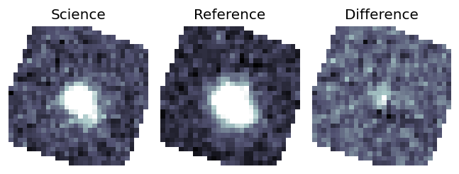
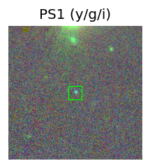
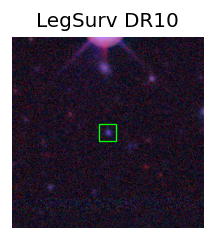
TESS: Sectors [42 70 92]
PS1: 0 sources in 3 arcsec
LegacySurvey: 1 sources in 3 arcsec Closest: d = 0.27 arcsec, 219.3 deg (east of north) photoz=1.01 (68% bounds 0.33, 1.25), type=EXP peak abs mag (ext. corrected) = -26.46 (68% bounds -23.56, -27.03)
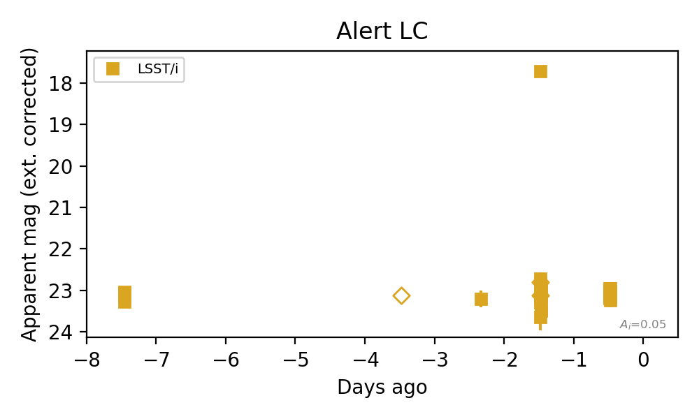
Rise Rate:
i: 0.43 mag/day
Fade Rate:
2. [ZTF] ZTF26acffqjy (Afterglow?) (TNS: AT 2026aimh) [Back to Top] [Share] [Trigger Swift] [Fritz Alert] [Fritz Source] [Lasair]RA, Dec: 119.74697, 25.69861 7h58m59.27s, 25d41m55.01sGalactic (l, b): 195.752, 25.51166 WARNING: 4.97 deg from ecliptic plane ext(g-r) = 0.042


TESS: Sectors [44 45 46 71 72]
NED host (10 arcsec):Found 2MASS J07585928+2541542 (G, 0.8″); NED spec-z: z=0.0423 [zflag SLS]; peak abs mag = -17.05
PS1: 0 sources in 3 arcsec
LegacySurvey: 1 sources in 3 arcsec Closest: d = 0.81 arcsec, 168.6 deg (east of north) photoz=0.03 (68% bounds 0.03, 0.05), type=SER peak abs mag (ext. corrected) = -16.57 (68% bounds -15.92, -17.43)

Extinction-corrected gr color:
From alerts: 0.31 +/- 0.19 mag
Extinction-corrected gi color:
From alerts: 0.44 +/- 0.23 mag
Extinction-corrected ri color:
From alerts: 0.13 +/- 0.17 mag
Consistent with synchrotron, g-r>0!
Rise Rate:
r: 0.98 mag/day
i: 0.13 mag/day
Fade Rate:
r: 0.94 mag/day
3. [ZTF] ZTF26acfnpoe (Afterglow?FBOT?) (TNS: AT 2026aitk) [Back to Top] [Share] [Trigger Swift] [Fritz Alert] [Fritz Source] [Lasair]RA, Dec: 174.04888, 3.38059 11h36m11.73s, 3d22m50.12sGalactic (l, b): 262.54613, 60.21275 WARNING: 0.74 deg from ecliptic plane ext(g-r) = 0.023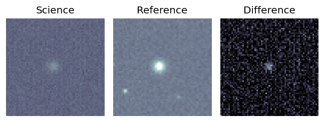
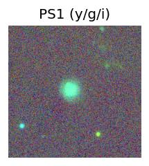
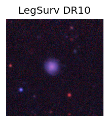
TESS: Sectors 72
SDSS (<15 kpc):Found SDSS phot-z: z=0.07; peak abs mag = -18.85
PS1: 0 sources in 3 arcsec
LegacySurvey: 1 sources in 3 arcsec Closest: d = 2.07 arcsec, 81.7 deg (east of north) photoz=0.11 (68% bounds 0.1, 0.13), type=REX peak abs mag (ext. corrected) = -19.87 (68% bounds -19.64, -20.19)
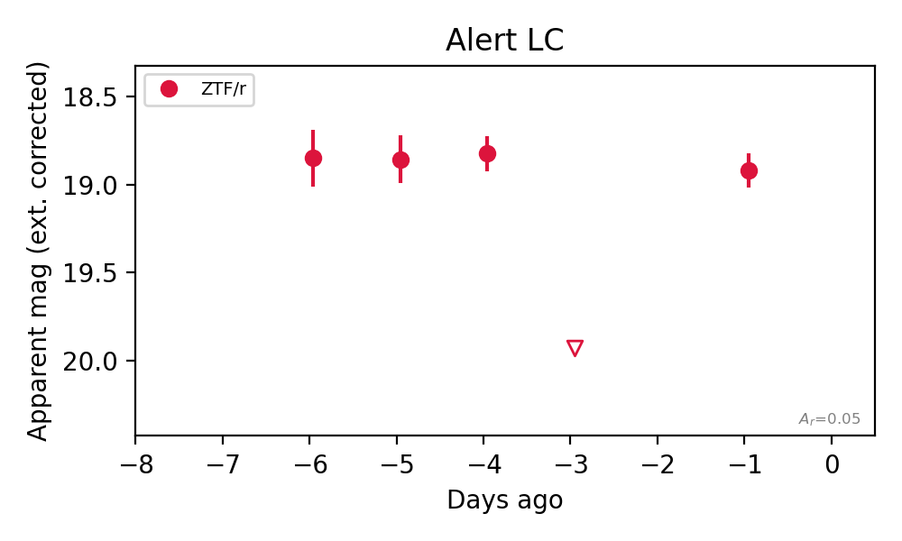
Rise Rate:
r: 0.5 mag/day
Fade Rate:
r: 1.1 mag/day
4. [LSST] 171172017886724245 (Afterglow?) [Back to Top] [Fritz Alert] [Fritz Source] [Lasair]RA, Dec: 62.34915, -47.50095 4h 9m23.80s, -47d-30m-3.43sGalactic (l, b): 254.53477, -46.61536 ext(g-r) = 0.014


TESS: Sectors [ 3 5 30 97]
PS1: 0 sources in 3 arcsec
LegacySurvey: 1 sources in 3 arcsec Closest: d = 0.26 arcsec, 186.8 deg (east of north) photoz=0.45 (68% bounds 0.42, 0.49), type=REX peak abs mag (ext. corrected) = -19.49 (68% bounds -19.32, -19.71)

Extinction-corrected gi color:
From alerts: 0.8 +/- 0.13 mag
Consistent with synchrotron, g-r>0!
Rise Rate:
g: 0.22 mag/day
r: 0.31 mag/day
i: 0.18 mag/day
Fade Rate:
r: 49.76 mag/day
5. [LSST] 171180824436146227 (Afterglow?) (TNS: AT 2026aisb) [Back to Top] [Fritz Alert] [Fritz Source] [Lasair]RA, Dec: 58.5606, -49.96264 3h54m14.54s, -49d-57m-45.49sGalactic (l, b): 258.91831, -48.50035 ext(g-r) = 0.01


TESS: Sectors [ 3 4 30 31 97]
PS1: 0 sources in 3 arcsec
LegacySurvey: 1 sources in 3 arcsec Closest: d = 2.18 arcsec, 219.3 deg (east of north) photoz=0.41 (68% bounds 0.34, 0.48), type=SER peak abs mag (ext. corrected) = -19.24 (68% bounds -18.7, -19.62)

Extinction-corrected gi color:
From alerts: -0.99 +/- 99 mag
Rise Rate:
g: 0.1 mag/day
Fade Rate:
i: 0.21 mag/day
6. [LSST] 171185213438165000 (Afterglow?) [Back to Top] [Fritz Alert] [Fritz Source] [Lasair]RA, Dec: 51.79288, -26.70332 3h27m10.29s, -26d-42m-11.96sGalactic (l, b): 221.34854, -55.42357 ext(g-r) = 0.012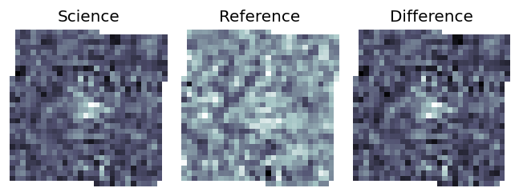
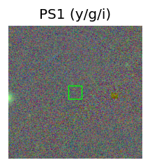
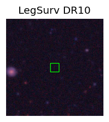
TESS: Sectors [ 4 31 105 106 107 108]
PS1: 0 sources in 3 arcsec
LegacySurvey: 1 sources in 3 arcsec Closest: d = 9.18 arcsec, 212.1 deg (east of north) photoz=1.07 (68% bounds 0.6, 1.75), type=REX peak abs mag (ext. corrected) = -21.45 (68% bounds -19.89, -22.76)
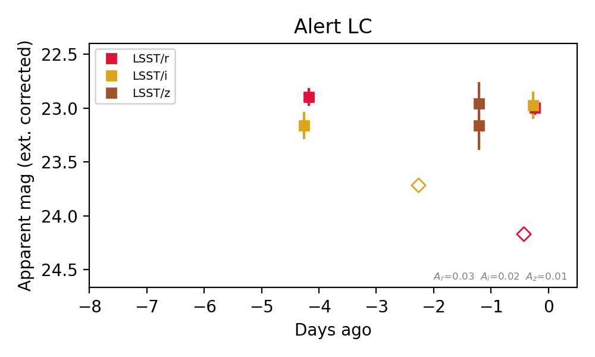
Extinction-corrected ri color:
From alerts: 0.02 +/- 0.14 mag
Consistent with synchrotron, g-r>0!
Rise Rate:
r: 6.02 mag/day
i: 0.37 mag/day
Fade Rate:
r: 0.34 mag/day
i: 0.28 mag/day
7. [ZTF] ZTF26acgnchh (Afterglow?) (TNS: AT 2026aixw) [Back to Top] [Share] [Trigger Swift] [Fritz Alert] [Fritz Source] [Lasair]RA, Dec: 198.03876, 7.50921 13h12m9.30s, 7d30m33.17sGalactic (l, b): 317.93593, 69.77518 ext(g-r) = 0.032Observed last night in r, not detected: limit 19.18 (5σ), 2.00 d after the last r detection at 18.76 → fading ≥ 0.21 mag/day.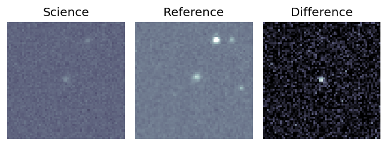
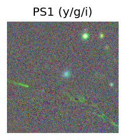
TESS: Sectors [23 50]
SDSS (<15 kpc):Found SDSS phot-z: z=0.16; peak abs mag = -20.84
PS1: 0 sources in 3 arcsec
LegacySurvey: 1 sources in 3 arcsec Closest: d = 0.64 arcsec, 76.4 deg (east of north) photoz=0.34 (68% bounds 0.16, 0.91), type=PSF peak abs mag (ext. corrected) = -22.7 (68% bounds -20.91, -25.25)
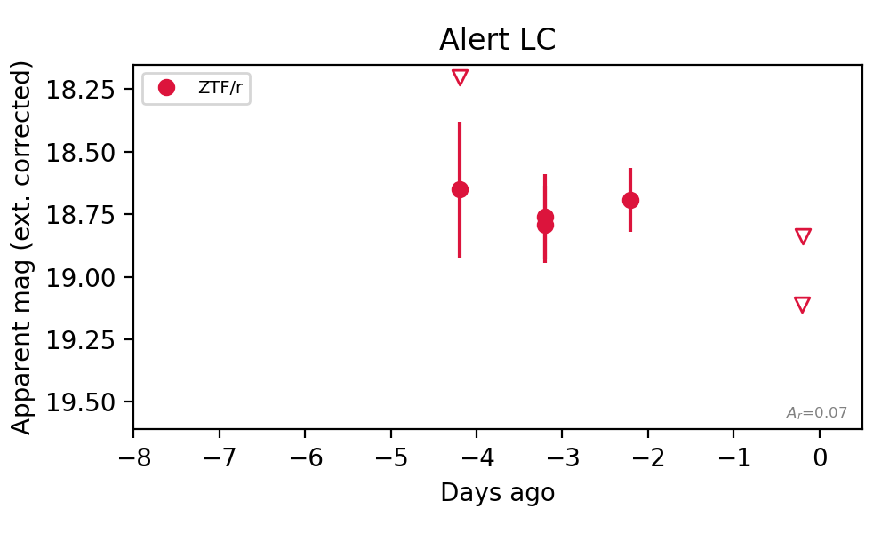
Rise Rate:
Fade Rate:
r: 0.21 mag/day
8. [ZTF] ZTF26acgncvb (Afterglow?) (TNS: AT 2026ajbt) [Back to Top] [Share] [Trigger Swift] [Fritz Alert] [Fritz Source] [Lasair]RA, Dec: 192.80275, 4.85802 12h51m12.66s, 4d51m28.86sGalactic (l, b): 302.78277, 67.7297 ext(g-r) = 0.04


TESS: Sectors [ 23 46 50 91 115]
NED host (10 arcsec):Found NGC 4734 (G, 4.8″); NED spec-z: z=0.0250 [zflag SLS]; peak abs mag = -16.92
NED photo-z only: SDSS J125112.13+045126.5 (*, 8.2″) z=0.8050 [zflag PUN] — not used for peak abs mag
PS1: 0 sources in 3 arcsec
LegacySurvey: 1 sources in 3 arcsec Closest: d = 4.97 arcsec, 46.4 deg (east of north) photoz=0.02 (68% bounds 0.02, 0.03), type=SER peak abs mag (ext. corrected) = -16.5 (68% bounds -15.98, -16.92)

Rise Rate:
r: 0.7 mag/day
Fade Rate:
r: 0.63 mag/day
9. [ZTF] ZTF26achcfme (Afterglow?) [Back to Top] [Share] [Trigger Swift] [Fritz Alert] [Fritz Source] [Lasair]RA, Dec: 125.53146, 23.50487 8h22m7.55s, 23d30m17.54sGalactic (l, b): 200.03346, 29.76506 WARNING: 3.96 deg from ecliptic plane ext(g-r) = 0.038Observed last night in g, not detected: limit 20.65 (5σ), 4.01 d after the last g detection at 20.20 → fading ≥ 0.11 mag/day.


TESS: Sectors [44 45 46 71 72]
PS1: 0 sources in 3 arcsec
LegacySurvey: 1 sources in 3 arcsec Closest: d = 9.68 arcsec, 308.3 deg (east of north) photoz=1.14 (68% bounds 0.93, 1.35), type=REX peak abs mag (ext. corrected) = -26.2 (68% bounds -25.65, -26.65)

Extinction-corrected gr color:
From alerts: -0.12 +/- 99 mag
Extinction-corrected gi color:
From alerts: 2.26 +/- 99 mag
Extinction-corrected ri color:
From alerts: 2.02 +/- 99 mag
Rise Rate:
g: 0.11 mag/day
i: 1.18 mag/day
Fade Rate:
g: 0.37 mag/day
i: 1.52 mag/day
10. [ZTF] ZTF26achjnzl (Afterglow?) [Back to Top] [Share] [Trigger Swift] [Fritz Alert] [Fritz Source] [Lasair]RA, Dec: 109.35602, 55.93276 7h17m25.44s, 55d55m57.95sGalactic (l, b): 161.08956, 25.73025 ext(g-r) = 0.072Observed last night in g, not detected: limit 20.58 (5σ), 1.01 d after the last g detection at 19.73 → fading ≥ 0.84 mag/day.

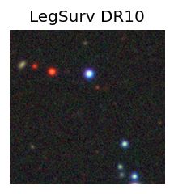
TESS: Sectors [20 47 60]
PS1: 0 sources in 3 arcsec
LegacySurvey: 1 sources in 3 arcsec Closest: d = 5.03 arcsec, 131.1 deg (east of north) photoz=0.78 (68% bounds 0.55, 1.0), type=REX peak abs mag (ext. corrected) = -24.55 (68% bounds -23.59, -25.2)

Extinction-corrected gr color:
From alerts: -0.74 +/- 99 mag
Rise Rate:
g: 0.97 mag/day
r: 0.45 mag/day
Fade Rate:
g: 0.84 mag/day
r: 45.01 mag/day
11. [ZTF] ZTF26achjzye (Afterglow?FBOT?) [Back to Top] [Share] [Trigger Swift] [Fritz Alert] [Fritz Source] [Lasair]RA, Dec: 131.59468, 36.00517 8h46m22.72s, 36d 0m18.62sGalactic (l, b): 186.93993, 37.8929 ext(g-r) = 0.034Observed last night in g, not detected: limit 20.71 (5σ), 1.01 d after the last g detection at 19.39 → fading ≥ 1.30 mag/day.

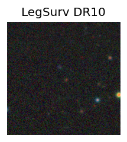
TESS: Sectors [21 47]
SDSS (<15 kpc):Found SDSS phot-z: z=0.10; peak abs mag = -19.17
PS1: 0 sources in 3 arcsec
LegacySurvey: 1 sources in 3 arcsec Closest: d = 1.97 arcsec, 235.7 deg (east of north) photoz=0.71 (68% bounds 0.53, 0.86), type=EXP peak abs mag (ext. corrected) = -23.95 (68% bounds -23.2, -24.47)

Extinction-corrected gr color:
From alerts: -1.12 +/- 99 mag
Rise Rate:
g: 1.35 mag/day
Fade Rate:
g: 1.3 mag/day
r: 0.21 mag/day
12. [ZTF] ZTF26achjpbg (Afterglow?) (TNS: AT 2026ajfo) [NED transient: GOTO24fuc (SN, 8.7″, z=0.0320) — reported, not trusted] [Back to Top] [Share] [Trigger Swift] [Fritz Alert] [Fritz Source] [Lasair]RA, Dec: 110.19809, 25.35198 7h20m47.54s, 25d21m7.11sGalactic (l, b): 192.80701, 17.33601 WARNING: 3.18 deg from ecliptic plane ext(g-r) = 0.067

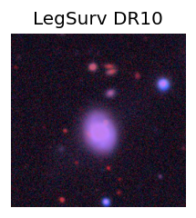
TESS: Sectors [44 45 46 71 72]
NED photo-z only: WISEA J072047.38+252101.8 (G, 4.8″) z=0.0335 [zflag PUN] — not used for peak abs mag
PS1: 0 sources in 3 arcsec
LegacySurvey: 1 sources in 3 arcsec Closest: d = 2.94 arcsec, 255.0 deg (east of north) photoz=0.05 (68% bounds 0.02, 0.21), type=PSF peak abs mag (ext. corrected) = -17.44 (68% bounds -15.4, -20.83)

Extinction-corrected gr color:
From alerts: 0.2 +/- 0.17 mag
Extinction-corrected gi color:
From alerts: -0.04 +/- 0.23 mag
Extinction-corrected ri color:
From alerts: -0.23 +/- 0.21 mag
Consistent with synchrotron, g-r>0!
Rise Rate:
g: 0.31 mag/day
r: 0.98 mag/day
i: 0.41 mag/day
Fade Rate:
13. [ZTF] ZTF26achtgdd (Afterglow?) [Back to Top] [Share] [Trigger Swift] [Fritz Alert] [Fritz Source] [Lasair]RA, Dec: 123.89775, 32.26629 8h15m35.46s, 32d15m58.65sGalactic (l, b): 189.82691, 30.9032 ext(g-r) = 0.044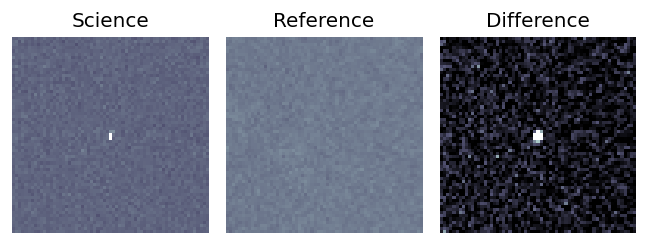
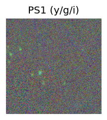
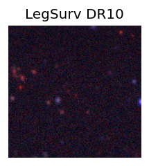
TESS: Sectors [44 45 46 47]
PS1: 0 sources in 3 arcsec
LegacySurvey: 1 sources in 3 arcsec Closest: d = 2.24 arcsec, 194.2 deg (east of north) photoz=1.05 (68% bounds 0.92, 1.21), type=REX peak abs mag (ext. corrected) = -25.62 (68% bounds -25.28, -26.01)
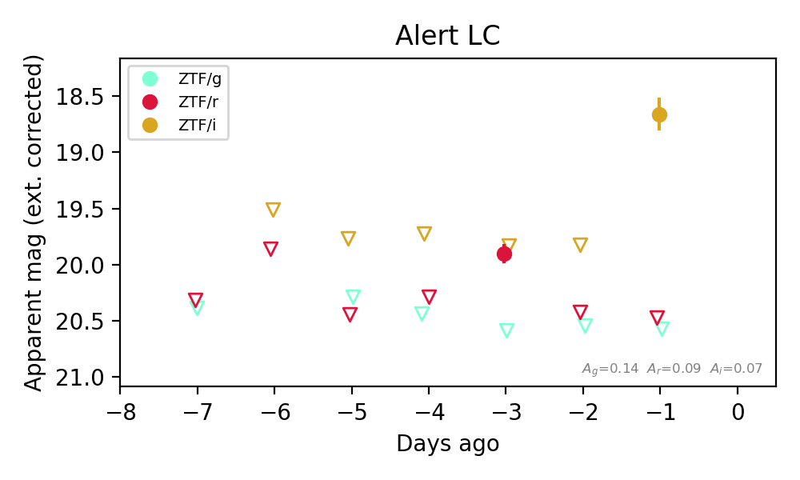
Extinction-corrected gr color:
From alerts: 0.69 +/- 99 mag
Extinction-corrected gi color:
From alerts: 1.91 +/- 99 mag
Extinction-corrected ri color:
From alerts: 1.81 +/- 99 mag
Rise Rate:
r: 0.39 mag/day
i: 1.14 mag/day
Fade Rate:
r: 0.53 mag/day
14. [ZTF] ZTF26achtaes (Afterglow?) [Back to Top] [Share] [Trigger Swift] [Fritz Alert] [Fritz Source] [Lasair]RA, Dec: 109.55979, 5.61369 7h18m14.35s, 5d36m49.30sGalactic (l, b): 210.95531, 8.50797 ext(g-r) = 0.115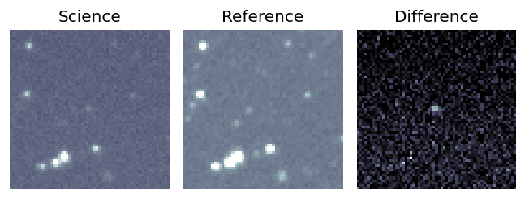
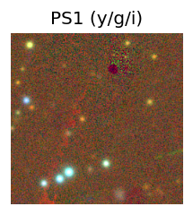

TESS: Sectors [ 7 33 87]
PS1: 0 sources in 3 arcsec
LegacySurvey: 0 sources in 3 arcsec
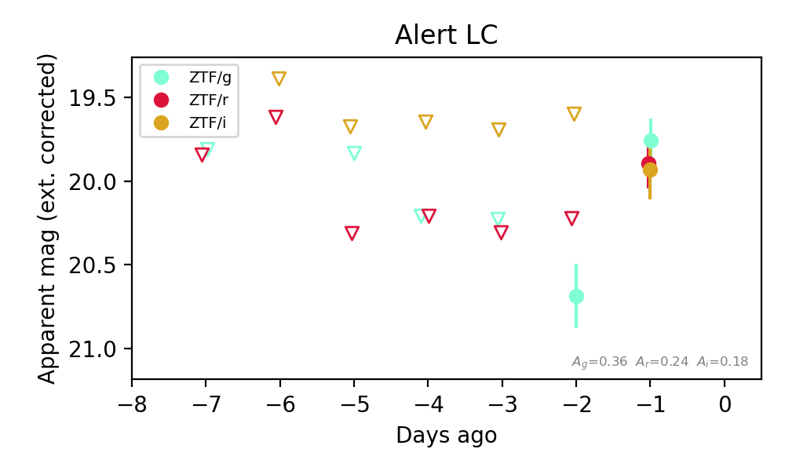
Extinction-corrected gr color:
From alerts: -0.14 +/- 0.2 mag
Extinction-corrected gi color:
From alerts: -0.17 +/- 0.22 mag
Extinction-corrected ri color:
From alerts: -0.04 +/- 0.23 mag
Consistent with synchrotron, g-r>0!
Rise Rate:
g: 0.93 mag/day
r: 0.31 mag/day
Fade Rate:
15. [LSST] 170068070160138354 (Afterglow?) [Back to Top] [Fritz Alert] [Fritz Source] [Lasair]RA, Dec: 54.91319, -27.4023 3h39m39.16s, -27d-24m-8.29sGalactic (l, b): 223.32028, -52.80134 ext(g-r) = 0.015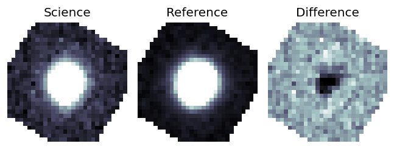
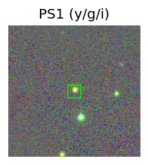
TESS: Sectors [ 4 31 105 106 107 108]
PS1: 0 sources in 3 arcsec
LegacySurvey: 1 sources in 3 arcsec Closest: d = 0.10 arcsec, 338.6 deg (east of north) photoz=0.42 (68% bounds 0.32, 0.52), type=SER peak abs mag (ext. corrected) = -19.45 (68% bounds -18.82, -20.03)
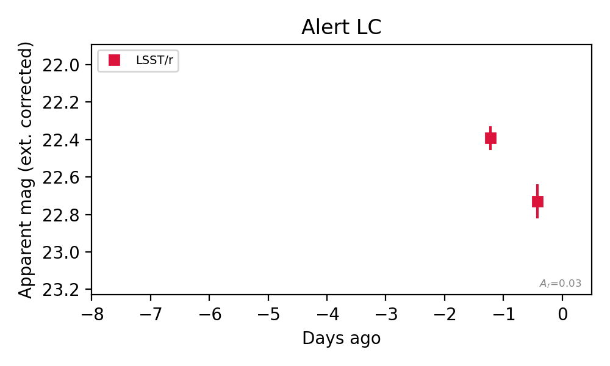
Rise Rate:
Fade Rate:
r: 0.43 mag/day
16. [LSST] 170591538064654353 (Afterglow?) [Back to Top] [Fritz Alert] [Fritz Source] [Lasair]RA, Dec: 350.90089, -10.05791 23h23m36.21s, -10d-3m-28.48sGalactic (l, b): 68.2611, -63.17292 ext(g-r) = 0.031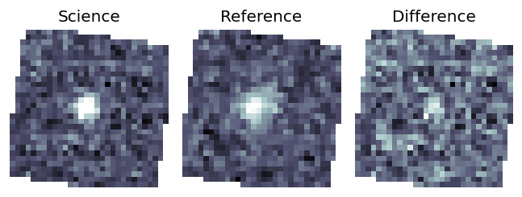
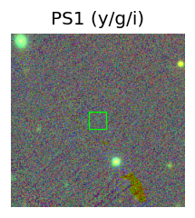
TESS: Sectors [42 70 92]
PS1: 0 sources in 3 arcsec
LegacySurvey: 1 sources in 3 arcsec Closest: d = 0.15 arcsec, 83.2 deg (east of north) photoz=1.05 (68% bounds 0.84, 1.37), type=PSF peak abs mag (ext. corrected) = -21.17 (68% bounds -20.56, -21.87)
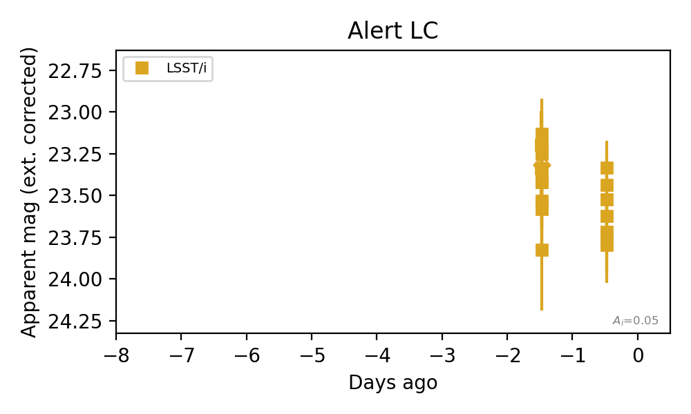
Rise Rate:
Fade Rate:
i: 0.22 mag/day
17. [LSST] 171198363420590134 (Afterglow?) [Back to Top] [Fritz Alert] [Fritz Source] [Lasair]RA, Dec: 349.28161, -9.67155 23h17m7.59s, -9d-40m-17.58sGalactic (l, b): 66.58032, -61.72708 WARNING: -4.66 deg from ecliptic plane ext(g-r) = 0.036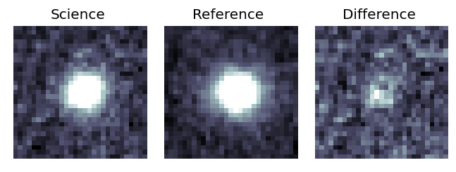
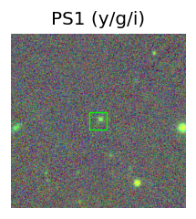
TESS: Sectors [42 70 92]
SDSS (<15 kpc):Found SDSS phot-z: z=0.52; peak abs mag = -19.82
PS1: 0 sources in 3 arcsec
LegacySurvey: 1 sources in 3 arcsec Closest: d = 0.46 arcsec, 293.9 deg (east of north) photoz=0.6 (68% bounds 0.58, 0.63), type=DEV peak abs mag (ext. corrected) = -20.21 (68% bounds -20.09, -20.33)
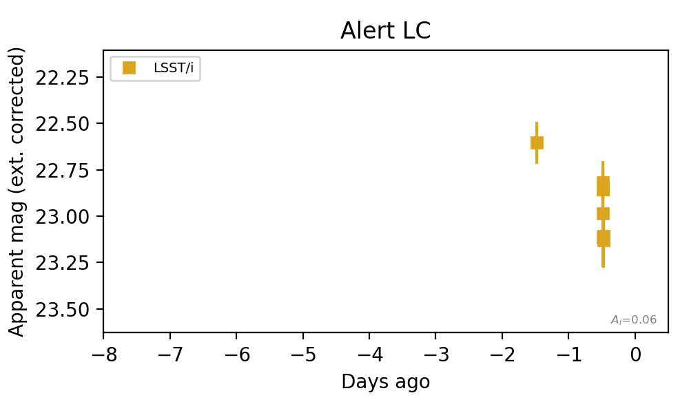
Rise Rate:
Fade Rate:
i: 0.35 mag/day
18. [LSST] 171198363654946855 (Afterglow?) [Back to Top] [Fritz Alert] [Fritz Source] [Lasair]RA, Dec: 349.09433, -11.72521 23h16m22.64s, -11d-43m-30.76sGalactic (l, b): 62.9252, -62.89707 ext(g-r) = 0.036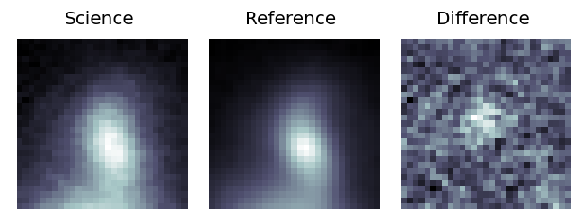
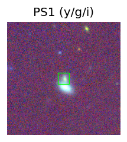
TESS: Sectors [ 2 29 42 70 92]
NED photo-z only: WISEA J231622.60-114335.4 (G, 4.7″) z=0.1061 [zflag PUN] — not used for peak abs mag
PS1: 0 sources in 3 arcsec
LegacySurvey: 1 sources in 3 arcsec Closest: d = 0.87 arcsec, 209.2 deg (east of north) photoz=0.11 (68% bounds 0.09, 0.14), type=SER peak abs mag (ext. corrected) = -16.54 (68% bounds -16.21, -17.04)
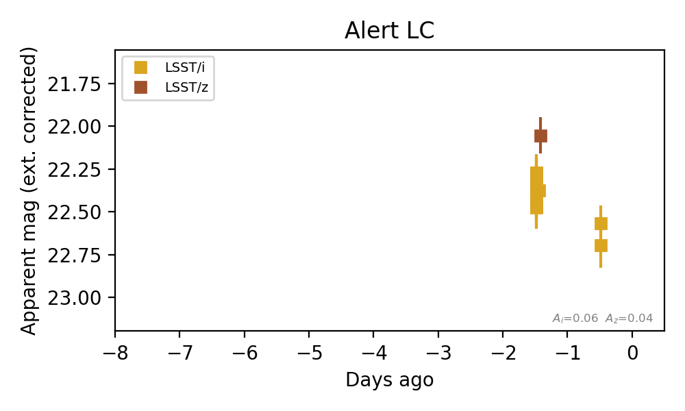
Extinction-corrected iz color:
From alerts: 0.31 +/- 0.11 mag
Consistent with synchrotron, g-r>0!
Rise Rate:
Fade Rate:
i: 0.26 mag/day
19. [LSST] 171198365673455712 (Afterglow?) [Back to Top] [Fritz Alert] [Fritz Source] [Lasair]RA, Dec: 351.5458, -10.62024 23h26m10.99s, -10d-37m-12.86sGalactic (l, b): 68.29075, -64.02059 ext(g-r) = 0.036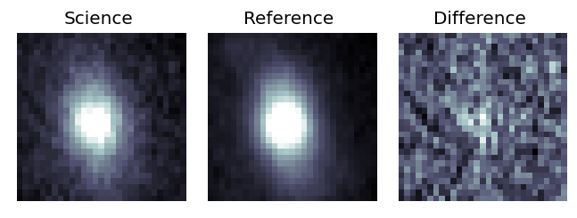
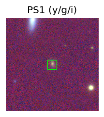
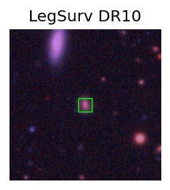
TESS: Sectors [ 2 29 42 70 92]
SDSS (<15 kpc):Found SDSS phot-z: z=0.35; peak abs mag = -18.76
PS1: 0 sources in 3 arcsec
LegacySurvey: 1 sources in 3 arcsec Closest: d = 0.11 arcsec, 126.3 deg (east of north) photoz=0.24 (68% bounds 0.18, 0.32), type=DEV peak abs mag (ext. corrected) = -17.84 (68% bounds -17.1, -18.6)
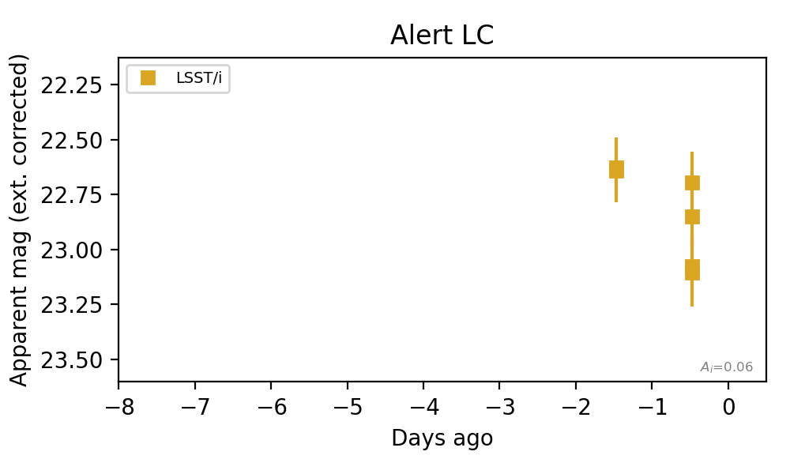
Rise Rate:
Fade Rate:
i: 0.28 mag/day
20. [LSST] 171198366100750420 (FBOT?) [Back to Top] [Fritz Alert] [Fritz Source] [Lasair]RA, Dec: 352.99913, -10.25516 23h31m59.79s, -10d-15m-18.57sGalactic (l, b): 71.18443, -64.80473 ext(g-r) = 0.025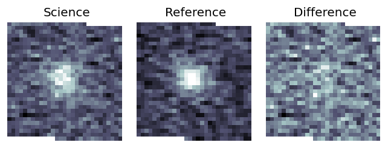
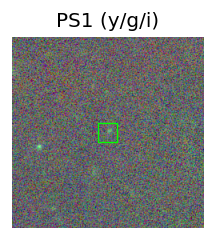
TESS: Sectors [ 2 29 42 92]
PS1: 0 sources in 3 arcsec
LegacySurvey: 1 sources in 3 arcsec Closest: d = 0.11 arcsec, 26.7 deg (east of north) photoz=0.55 (68% bounds 0.35, 0.77), type=REX peak abs mag (ext. corrected) = -20.11 (68% bounds -18.95, -21.0)
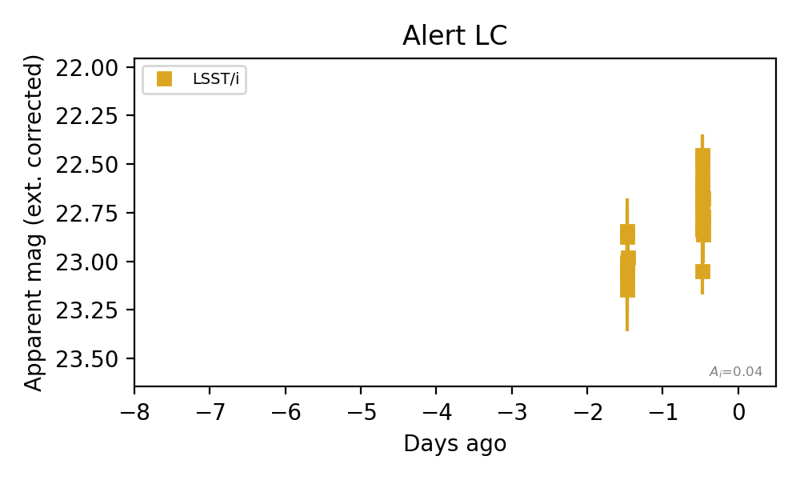
Rise Rate:
i: 0.29 mag/day
Fade Rate: